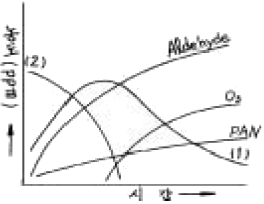
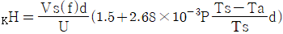
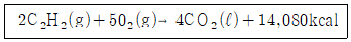
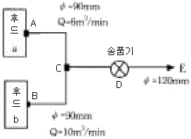

대기환경기사 (2005-05-29 기출문제)
1과목: 대기오염 개론
1. 지상의 점오염원(He=0)으로부터 바람부는 방향으로 400m 떨어진 연기의 중심선상에서의 지상(z=0)오염농도는? (단, 오염물질배출량은 10g/s, 풍속은 5m/s, σy와 σz는 각각 22.5m와 12m이고, 농도계산식은 가우시안 모델 식을 적용)
- 0.85 ㎎/m3
- 1.55 ㎎/m3
- 2.36 ㎎/m3
- 3.56 ㎎/m3
(정답률: 알수없음)

2. 다이옥신에 관한 설명으로 틀린 것은?
- 증기압과 수용성이 낮으며 비점이 높아 열적안정성이 좋다.
- 다이옥신류는 크게 PCDD와 TCDD로 대별된다.
- 벤젠등에는 용해되는 지용성으로 토양 등에 흡수된다.
- 고온에서 완전연소 후에도 저온에서 재생성이 있다.
(정답률: 알수없음)
3. 포름알데히드의 주된 발생업종이 아닌 것은?
- 금속정련공장
- 합성수지공장
- 포르말린 제조공장
- 피혁공장
(정답률: 70%)
4. 전형적인 자동차 배기가스의 구성 중 발생량이 가장 많은 물질은? (단, 감속할 때를 기준으로 함)
- 일산화탄소
- 탄화수소
- 질소산화물
- 수소
(정답률: 30%)
5. 가스상 대기오염물질 중 암모니아에 약한 식물(지표식물)로 가장 적절한 것은?
- 알팔파
- 토마토
- 담배
- 아카시아
(정답률: 91%)
6. 질소가스 70%, 산소가스 6%, 이산화탄소가스 24%인 혼합가스의 평균분자량은?
- 49 g/gmole
- 40 g/gmole
- 35 g/gmole
- 32 g/gmole
(정답률: 알수없음)
7. 180℃, 0.8atm에서 SO2농도가 0.2g/m3 이라면 표준상태에서는 몇 ppm인가?
- 145.2
- 181.5
- 201.8
- 225.2
(정답률: 알수없음)
8. Richardson수(R)에 관한 설명으로 알맞지 않은 것은?
- 무차원수로 대류난류를 기계적인 난류로 전환시키는 율을 측정한 것이다.
- R ＞0.25 일 때는 대류에 의한 혼합이 기계적 혼합을 지배한다.
- R이 큰 음의 값을 가지면 대류가 지배적이어서 바람이 약하게 되어 강한 수직운동이 일어난다.
- R=0 일 때는 기계적 난류만 존재한다.
(정답률: 알수없음)
9. 다음 대기 오염 물질중 비중이 가장 큰 것은?
- SO2
- CS2
- NO
- HCHO
(정답률: 알수없음)
10. 지표높이 10m에서의 풍속이 4m/s일 때 상공의 풍속이 5m/s가 되는 위치의 높이는? (단, P는 0.28, Deacon법칙 적용)
- 약 18m
- 약 22m
- 약 26m
- 약 28m
(정답률: 알수없음)
11. 다음 그림은 자동차 배출가스를 Air Chamber에 넣고 자외선을 쪼였을 때 발생하는 각종 가스 성분의 농도 변화를 표시한 것이다. (1) 및 (2)에 넣어야 할 적당한 물질로 구성된 것은?

- (1)→NO, (2)→HC
- (1)→NO, (2)→NO2
- (1)→HC, (2)→NO
- (1)→NO2, (2)→NO
(정답률: 알수없음)
12. 바람의 요소중 '전향력'에 관한 설명으로 틀린 것은?
- 지구의 자전에 의해 생기는 가속도를 전향가속도라 하고 이 가속도에 의한 힘을 전향력이라 한다.
- 전향력의 크기는 위도가 높아질수록 작아진다.
- 전향력은 북반부에서 바람방향의 우측 직각방향으로 작용한다.
- 코리올리힘이라고도 하며 경도력과 반대방향으로 작용한다.
(정답률: 알수없음)
13. 일산화탄소 발생원 중 지구상 연간 가장 많은 양을 발생시키는 인공원은?
- 자동차
- 석탄연소
- 공업
- 소각 또는 화재
(정답률: 알수없음)
14. 고속도로상의 교통밀도가 시간당 25,000대이고, 차량의 평균속도가 시간당 100km이다. 이때 차량 한 대의 탄화수소의 배출량이 0.04g/sec-대 인 조건에서 고속도로에서 배출되는 탄화수소의 총량은 몇 g/secㆍm인가?
- 0.01
- 0.02
- 0.03
- 0.04
(정답률: 알수없음)
15. 다음의 물질 중에서 오존층 파괴물질로써 오존층 파괴능이 가장 큰 것은?
- 프레온가스(CFC)
- 할론(Halon)
- 메틸클로로포름
- 사염화탄소
(정답률: 알수없음)
16. 문제 오류로 복원중입니다. 정확한 내용을 아시는 분께서는 오류신고를 통하여 내용 작성 부탁드립니다. 정답은 3번입니다.
- 오염물은 점원으로 부터 계속적으로 방출된다.
- 과정은 안정상태이다. 즉

- 확산에 의한 오염물의 주이동방향은 X축이다.
- 풍속은 x,y,z 좌표시스템내의 어느 점에서든 일정하다.
(정답률: 알수없음)
17. 야간에 형성된 접지역전층이 일출 후 지표면의 가열로 지표면 부터 역전이 해소되어, 하층은 대류가 활발하여 불안정해지나 그 상층은 아직 안정상태로 남아 있는 경우 나타나는 연기의 형태는?
- Coning
- Lofting
- Fanning
- Fumigation
(정답률: 알수없음)
18. 대기오염모델인 수용모델의 화학분석법에 해당되지 않는 것은?
- 다변량 분석법
- 광학 현미경법
- 인자 분석법
- 공간 계열 분석법
(정답률: 알수없음)
19. 대기의 구조를 균질층과 이질층으로 구분한 경우에 관한 설명으로 틀린 것은?
- 지상 0∼88km까지를 균질층으로 구분할 수 있다.
- 균질층내의 공기는 지상 0∼30km까지 98%가 존재하고 있다.
- 이질층은 보통 3개층으로 분류되며 3600∼9600km를 헬륨층이라 한다.
- 이질층에 공기는 강한 산화력으로 인하여 지상에서 발생되어 상승한 이물질 등을 산화, 소멸시킨다.
(정답률: 알수없음)
20. 유효 굴뚝높이를 구하는데 사용되는 방정식으로 홀랜드식(Holland's equation)이 있다. 풍속이 5m/sec 이고 높이 50m, 구경 2m, 배출가스 속도 15m/sec, 배출 가스 온도 127℃인 굴뚝이 있다. 대기중의 공기는 27℃ 일 때 유효굴뚝 높이는? (단, 1기압을 기준으로 하며 대기의 안정도는 중립조건 홀랜드식은

로 표시함)- 약 67m
- 약 78m
- 약 84m
- 약 92m
(정답률: 알수없음)
2과목: 연소공학
21. 기체연료의 연소방법중 역화 위험이 가장 큰 방법은?
- 확산연소
- 부분예혼합연소
- 난류연소
- 예혼합연소
(정답률: 알수없음)
22. '그을음' 발생에 관한 설명으로 틀린 것은?
- 분해나 산화하기 쉬운 탄화수소는 그을음발생이 적다.
- C/H비가 큰 연료일수록 그을음이 잘 발생된다.
- 탈수소 보다 -C-C-의 탄소결합을 절단하는 것이 용이한 연료일수록 잘 발생된다.
- 발생빈도의 순서는 천연가스＜ LPG＜ 제조가스＜ 석탄가스＜ 코크스... 이다.
(정답률: 알수없음)
23. 액화석유가스(LPG, Liquified Petroleum Gas)에 대한 다음 설명중 틀린 것은?
- 상온에서 10 - 20기압을 가하거나 또는 -49℃로 냉각 시킬 때 용이하게 액화되는 석유계의 탄화수소가스를 말한다.
- 탄소수가 3 - 4개까지 포함되는 탄화수소류가 주성분으로 되어있다.
- 석유정제시 부산물로 얻어지기도 하지만 대부분은 천연 가스에서 회수되고 있다.
- 비중이 공기보다 무거워 인화, 폭발위험성이 높다.
(정답률: 알수없음)
24. 프로판(C3H8) 50%와 부탄(C4H10) 50% 혼합가스 1Sm3의 연소에 필요한 공기량(Sm3)은?
- 21.1
- 24.5
- 27.4
- 29.5
(정답률: 알수없음)
25. 저발열량이 10,000kcaㅣ/kg, 이론 공기량이 11Nm3/kg, 이론 연소가스량이 11.5Nm3/kg의 중유를 공기비 1.4로 완전연소할 때 이론가스의 온도는? (단, 공기 및 중유의 온도는 20℃, 연소가스의 비열은 0.4kcal/Nm3℃, 건조가스기준 )
- 1592℃
- 1617℃
- 1787℃
- 1845℃
(정답률: 알수없음)
26. 다음 아세틸렌의 연소반응식에서 반응열이 갖는 의미로 옳은 것은?

- 비열
- 흡수열
- 저발열량
- 고발열량
(정답률: 20%)
27. 2%의 황분을 함유한 석탄 1.0ton를 완전연소하면 표준상태에서 약 몇 Sm3의 아황산가스가 발생하겠는가? (단, 모든 황분은 아황산가스만을 생성한다.)
- 32
- 21
- 16
- 14
(정답률: 40%)
28. 연료의 착화온도에 관한 설명으로 틀린 것은?
- 공기의 산소농도 및 압력이 높을수록 낮아진다.
- 활성화에너지는 작을수록 낮아진다.
- 비표면적이 클수록 낮아진다.
- 발열량이 작을수록 낮아진다
(정답률: 알수없음)
29. 메탄의 고위발열량이 9500kcal/Sm3이라면 저위발열량(kcal/Sm3)은?
- 8540
- 8620
- 8790
- 8940
(정답률: 40%)
30. 석탄의 탄화도가 증가하면 감소하는 것은?
- 고정탄소
- 착화온도
- 매연발생률
- 발열량
(정답률: 알수없음)
31. 어떤 액체연료의 조성이 무게비로 탄소 84.0%, 수소 11.0% 황 2.0%, 산소 3.0%인 연료가 있다. 이 연료 50㎏을 완전연소시킬 때 생성되는 이산화탄소의 양은?
- 154㎏
- 237㎏
- 270㎏
- 308㎏
(정답률: 알수없음)
32. 프로판(C3H8) 1Sm3를 연소시킬 때 이론건조 연소가스량(Sm3)은 얼마인가?
- 19.8
- 20.8
- 21.8
- 22.8
(정답률: 알수없음)
33. 등가비(Φ)에 관한 설명 중 알맞지 않은 것은?
- 공기비(m) = 1/Φ로 나타낼 수 있다.
- Φ = 1 는 완전연소상태라 할 수 있다.
- (실제의 연료량/산화제)÷(완전연소 이상적연료량/산화제)로 나타낸다.
- Φ ＞1 은 과잉공기 상태로 질소산화물이 증가한다.
(정답률: 알수없음)
34. 연료연소시 공기비의 크기에 따른 연소특성을 설명한 것으로 틀린 것은?
- 공기비가 너무 작은 경우 매연이나 검댕의 발생량이 증가한다.
- 공기비가 너무 작은 경우 연소효율이 저하된다.
- 공기비가 너무 큰 경우 연소실의 냉각효과를 가져온다.
- 공기비가 너무 큰 경우 SOx의 발생량이 감소한다.
(정답률: 알수없음)
35. CH4 93%, O2 2%, N2 5%의 조성가스 0.5Sm3를 연소시키는데 필요한 이론공기량(Sm3)은?
- 4.38
- 6.14
- 9.18
- 13.14
(정답률: 알수없음)
36. 분자식이 CmHn인 탄화수소가스로 1 Sm3를 완전연소시 이론 공기량이 11.9 Sm3 인 것은?
- C2H4
- C2H2
- C3H8
- C3H4
(정답률: 알수없음)
37. 등유(C10H20) 3kg 완전연소시킬 때 필요한 이론 공기량은?
- 22.8 Sm3
- 28.5 Sm3
- 34.3 Sm3
- 39.2 Sm3
(정답률: 알수없음)
38. 액체연료의 연소장치 중 '유압분무식버너'에 관한 설명과 가장 거리가 먼 것은?
- 대용량 버너 제작이 용이하다.
- 분무각도가 40~90°로 크다.
- 연료의 점도가 크거나 유압이 5kg/cm2 이하가 되면 분무화가 불량하다.
- 유량조절범위가 넓어 부하변동 적응에 용이하다.
(정답률: 알수없음)
39. 프로판을 공기비 1.4로 완전연소할 때 건조연소가스 중의 CO2(%)는?
- 9.6
- 11.2
- 13.4
- 15.1
(정답률: 알수없음)
40. 탄소, 수소의 중량 조성이 각각 86%, 14%인 액체연료를 매시 30kg 연소한 경우 배기가스의 분석치가 CO2 12.5% O2 3.5%, N2 84% 이라면 매시간 필요한 공기량(Sm3)은?
- 약 794
- 약 675
- 약 591
- 약 406
(정답률: 알수없음)
3과목: 대기오염 방지기술
41. 배출가스내 먼지의 입경분포를 측정하여 대수확률지에 그렸더니 직선이 되었다. 50% 입경과 84.13% 입경이 각각 12.0 ㎛와 4.0 ㎛였다. 기하평균입경은 얼마인가?
- 0.3 ㎛
- 3 ㎛
- 4 ㎛
- 12 ㎛
(정답률: 알수없음)
42. HOG가 0.7m이고 제거율이 99%면 흡수탑의 충진높이는?
- 1.6m
- 2.1m
- 2.8m
- 3.2m
(정답률: 알수없음)
43. 다음 그림과 같은 배기시설에서 관 DE에 흐르는 유체의 속도는 관 BC의 유속의 몇 배가 되는가? (단, 관에서의 마찰손실과 밀도변화는 무시한다.)

- 0.8
- 0.9
- 1.2
- 1.5
(정답률: 알수없음)
44. 전기집진장치의 장해현상중 역전리 현상의 원인과 가장 거리가 먼 것은?
- 입구의 유속이 클 때
- 미분탄 연소시
- 분진 비저항이 너무 클 때
- 배출가스의 점성이 클 때
(정답률: 알수없음)
45. 송풍기 회전판 회전에 의하여 집진장치에 공급되는 세정액이 미립자로 만들어져 집진하는 원리를 가진 회전식 세정집진장치에서 직경이 10 cm인 회전판이 8600rpm으로 회전할 때 형성되는 물방울의 직경은 몇 ㎛인가?
- 93
- 104
- 208
- 316
(정답률: 알수없음)
46. 사이클론에서 입자의 분리속도와 반비례하는 영향인자는?
- 입자의 직경
- 입자의 밀도
- 원통부의 반경
- 함진가스의 선회속도
(정답률: 알수없음)
47. 여과집진장치의 탈진방식중 간헐식에 관한 설명으로 틀린것은?
- 연속식에 비하여 분진의 재비산이 적고 높은 집진율을 얻을 수 있다.
- 여러 개의 방으로 구분하고 방 하나씩 처리가스의 흐름을 차단하여 순차적으로 탈진하는 방식이다.
- 간헐식중 진동형은 음파진동, 횡진동, 상하진동에 의해 포집된 분진층을 털어내는 방식으로 접착성 분진의 집진에는 사용할 수 없다.
- 간헐식중 가압형은 고압의 충격제트기류를 분진층에 분사하고 압력에 의해 분진층을 털어내는 방식으로 최근 사용이 늘어나고 있다.
(정답률: 알수없음)
48. 1기압, 15℃인 공기의 비중량은 1.225kgf/m3이다. 이 공기가 송풍관에서 15m/sec의 속도로 흐른다면 속도압은?
- 약 8.5 mmH2O
- 약 12.3 mmH2O
- 약 14.1 mmH2O
- 약 15.8 mmH2O
(정답률: 알수없음)
49. 처리가스량 30000 m3hr, 압력손실 300㎜H2O인 집진장치의 송풍기 축동력은 몇 ㎾가 되겠는가? (단, 송풍기의 효율은 50% )
- 약 38 ㎾
- 약 43 ㎾
- 약 49 ㎾
- 약 52 ㎾
(정답률: 알수없음)
50. VOCs를 제어하기 위한 막기술의 주요 설계인자로 가장 알맞는 것은?
- 연소온도
- 침투속도
- 승화 및 수화물질 제어속도
- 액체 및 고체 평형 제어속도
(정답률: 알수없음)
51. 석탄화력발전소에서 120m3/min의 배기가스를 전기집진기로 처리한다. 입자이동 속도가 10cm/sec일 때 이 집진기의 효율이 99.0%가 되려면 집진기 면적은? (단, Deutsch-Anderson 식 적용)
- 약 47m2
- 약 54m2
- 약 75m2
- 약 92m2
(정답률: 알수없음)
52. 원심력집진장치인 사이클론(cyclone)에서 가스유입속도를 2배로 증가시키고 입구폭을 3배로 늘리면 50% 효율로 집진되는 입자의 직경,즉 Lapple의 절단입경(cut diameter)인 dp50은 처음의 몇 배가 되는가?
- 1.38
- 1.23
- 0.82
- 0.72
(정답률: 알수없음)
53. Co-Ni-Mo을 수소첨가촉매로 하여 250 - 450℃에서 30 -150kg/cm2 의 압력을 가하여 H2S,S,SO2 형태로 제거하는 중유 탈황법은?
- 직접탈황법
- 흡착탈황법
- 활성탈황법
- 산화탈황법
(정답률: 알수없음)
54. 일반적으로 대기오염 발생원에서 배출되는 분진의 입경분포에 대한 자료의 대표값들을 크기 순으로 나열한 것으로 가장 알맞는 것은?
- 산술평균＞최빈경＞중앙값
- 중앙값＞산술평균＞최빈경
- 산술평균＞중앙값＞최빈경
- 중앙값＞최빈경＞산술평균
(정답률: 알수없음)
55. 배출되는 불소화합물 처리에 관한 설명으로 틀린 것은?
- 물에 대한 용해도가 비교적 크므로 수세에 의한 처리가 적당하다.
- 충전탑과 같은 세정장치가 적절하다.
- 스프레이 탑을 사용할 때에 분무 노즐의 막힘이 없도록 보수관리에 주의가 필요하다.
- 처리중 고형물을 생성하는 경우가 많다.
(정답률: 알수없음)
56. 습식배연탈황법인 습식석회석-석고 탈황법에서 스캘링(Scaling)방지 방안으로 적절치 않는 것은?
- 흡수액 슬러리 중의 석고농도를 낮게 유지하여 석고의 결정화를 방지한다.
- 흡수액량을 많게 탑내에서의 결착을 방지한다.
- 순환액의 pH값 변동을 적게한다.
- 탑내에 내장물을 가능한한 설치하지 않는다.
(정답률: 알수없음)
57. 황 함량 3.0%인 중유를 시간당 8톤으로 연소하는 배출 가스를 수산화나트륨으로 탈황할 때 이론적으로 필요한 NaOH양(㎏/hr)은? (단, 탈황율은 100% 기준)
- 150㎏/hr
- 380㎏/hr
- 470㎏/hr
- 600㎏/hr
(정답률: 알수없음)
58. 높이 7m, 폭 10m, 길이 15m의 중력집진장치를 이용하여 처리가스를 4m3/sec의 유량으로 비중이 1.5인 먼지를 처리하고 있다. 이 집진기가 포집할 수 있는 최소입자의 크기(d, min)는? (단, 온도는 25℃, 점성계수는 1.85×10-5kg/mㆍs이며 공기의 밀도는 무시한다)
- 약 32㎛
- 약 25㎛
- 약 17㎛
- 약 12㎛
(정답률: 알수없음)
59. 직경이 150mm, 유효높이 10m의 원통형 백필터를 사용하여 함진농도 7g/m3 가스를 600m3/min로 처리한다면 백필터 소요수는? (단, 여과속도 1.2 cm/sec)
- 177
- 207
- 256
- 295
(정답률: 알수없음)
60. 전기집진장치의 장, 단점과 가장 거리가 먼 내용은?
- 다른 고효율 집진장치에 비해 압력손실이 적다.
- 소요동력이 적고 유지관리비가 적게 든다.
- 부식 및 부착가스의 영향이 크다.
- 집진효율이 서서히 저감된다.
(정답률: 0%)
4과목: 대기오염 공정시험기준(방법)
61. 연료용 유류 중의 황 함유량을 측정하기 위한 분석법은?
- 방사선식 여기법
- 자동 연속 열탈착 분석법
- 테들라 백-열 탈착법
- 몰린 형광 광도법
(정답률: 알수없음)
62. 다이옥신류 측정시 시료채취용 내부표준 물질로 사용되는 물질은? (단, 가스크로마토그래프/질량분석계에 의한 분석 기준)
- 37Cl4 - 2,3,7,8 - T4CDD
- 13C12 2,3,7,8 - T4CDD
- 37Cl4 - 2,3,7,8 - T4CDF
- 13C12 - 2,3,7,8 - T4CDF
(정답률: 알수없음)
63. 흡광광도법에서 자외부의 광원으로 주로 사용되는 것은?
- 텅스텐램프
- 중공음극램프
- 열 음극 램프
- 중수소방전관
(정답률: 알수없음)
64. 가스크로마토 그래프의 분리관 효율은 이론단수 또는 1이론단에 해당하는 분리관의 길이(HETP)로 표시한다. 어느 분리관의 보유시간(tR)이 10분, 피이크의 좌우 변곡점에서 접선이 자르는 바탕선이 길이(W) 10mm, 기록지 이동속도 5mm/min 이었다면 이론단수는?
- 400
- 800
- 1600
- 2400
(정답률: 알수없음)
65. 환경 대기중의 질소산화물을 자동연속측정하는 방법과 가장 거리가 먼 것은?
- 자외선형광법
- 살츠만법
- 화학발광법
- 흡광차분광법
(정답률: 알수없음)
66. 오르자트 가스 분석계로 산소를 측정할 때 사용되는 산소 흡수액은?
- 수산화칼슘용액 + 피로갈롤용액
- 수산화칼륨용액 + 피로갈롤용액
- 염화제일주석 + 피로갈롤용액
- 아연 + 피로갈롤용액
(정답률: 알수없음)
67. 디에틸디티오카바민산은을 클로로포름용액에 흡수시켜 생성되는 적자색 용액의 흡광도를 측정하여 정량하는 화합물은?
- 폐놀 화합물
- 취소 화합물
- 염소 화합물
- 비소 화합물
(정답률: 알수없음)
68. 특정발생원에서 일정한 연도를 거치지 않고 외부로 비산되는 분진을 하이 보륨에어 샘플러로 측정한바 다음과 같은 결과를 얻었다. 이때 비산분진의 농도는 몇 mg/m3인가? (단, 최고 분진농도 : 65 mg/m3 , 풍향 보정계수 : 1.5, 대조위치의 분진농도 : 0.23 mg/m3, 풍속 보정계수 : 1.2이다. )
- 87
- 94
- 102
- 117
(정답률: 알수없음)
69. 대기시험의 일반시험법에 대한 설명중 틀린 것은?
- '약'이란 그 무게 또는 부피에 대하여 ±10%이상의 차가 있어서는 안된다.
- '정확히 단다'라 함은 규정한 량의 검체를 취하여 분석용 저울로 0.1mg까지 다는 것을 뜻한다.
- '항량이 될 때까지 건조한다. 또는 강열한다'라 함은 따로 규정이 없는한 보통의 건조방법으로 1시간 더 건조 또는 강열할 때 전후무게의 차가 0.3mg 이하일 때를 뜻한다.
- 액체성분의 양을 '정확히 취한다'라함은 홀피펫, 메스 플라스크 또는 이와 동등 이상의 정도를 갖는 용량계를 사용하여 조작하는 것을 뜻한다.
(정답률: 알수없음)
70. 굴뚝 배출가스 중 총탄화수소측정에 관한 설명으로 틀린것은?
- 농도는 프로판 또는 탄소등가농도로 환산하여 표시한다.
- 채취된 시료는 불꽃이온화분석기 또는 비분산적외선 분석기로 유입되어 분석된다.
- 반응시간은 오염물질농도의 단계변화에 따라 최종값의 50%이상에 도달하는 시간을 말한다
- 시료채취관은 스테인레스강 또는 이와 동등한 재질의 것으로 하고 굴뚝중심 부분의 10%범위 내에 위치할 정도의 길이의 것을 사용한다.
(정답률: 42%)
71. 원자흡광광도법에 있어서 목적원소에 의한 흡광도 As와 표준원소에 의한 흡광도 AR와의 비를 구하고 As/AR값과 표준물질 농도와의 관계를 그래프에 작성하여 검량선을 만들어 시료중의 목적원소 농도를 구하는 것은?
- 표준 첨가법
- 내부 표준법
- 절대 검량선법
- 검량선법
(정답률: 알수없음)
72. 어느 보일러 굴뚝내의 배출가스 밀도가 1.2kg/m3, 피토우관에서의 동압이 0.2inH2O일 때 굴뚝의 배출가스 유속은? (단, 피토우관 계수 : 0.84)
- 5.60m/sec
- 7.65m/sec
- 8.38m/sec
- 9.10m/sec
(정답률: 알수없음)
73. 환경오염 공정시험법의 분석대상 가스에 대한 흡수액을 수산화나트륨으로 쓰지 않는 것은?
- 이황화탄소
- 불소화합물
- 염화수소
- 브롬화합물
(정답률: 알수없음)
74. 굴뚝 배출가스중의 먼지를 연속적으로 자동 측정하는 광산란 적분법의 장치 구성과 가장 거리가 먼 것은?
- 앰프부
- 검출부
- 기록부
- 수신부
(정답률: 알수없음)
75. 원자흡광광도법 적용시 사용되는 용어정의로 틀린 것은?
- 근접선: 목적하는 스펙트럼선에 가까운 파장을 갖는 다른 스펙트럼선
- 선프로파일: 파장에 대한 스펙트럼선의 강도를 나타내는 곡선
- 충전가스: 불꽃 단락을 방지하기 위해 분무버너에 채우는 가스
- 다연료 불꽃: 가연성가스/조연성가스의 값을 크게한 불꽃
(정답률: 알수없음)
76. 굴뚝등에서 배출되는 가스중의 산소측정을 위한 자기풍분석계의 구성인자와 가장 거리가 먼 것은?
- 측정셀
- 열선소자
- 자극
- 담벨
(정답률: 알수없음)
77. 중화적정법으로 황산화물을 측정할 때 쓰이는 흡수액은?
- 에틸아민동용액
- 과산화수소수
- 수산화나트륨용액
- 에틸알코올
(정답률: 알수없음)
78. 굴뚝에서 배출되는 배출가스중의 페놀화합물 분석방법에 대한 설명중에서 틀린 것은?
- 4 - 아미노안티피린법은 시약을 가하여 얻어진 청색액의 시료를 610nm의 가시부에서 흡광도를 측정하여 페놀류의 농도를 산출한다.
- 4 - 아미노안티피린법은 시료중의 페놀류를 수산화나트륨용액(0.4W/V%)에 흡수시켜 포집한다.
- 시료가스 채취량이 10L인 경우 시료중의 페놀류의 농도가 1 - 20V/V%ppm범위의 분석에 적합하다.
- 시료채취방법중 포집병법은 시료중의 페놀류의 농도가 높고 직접 가스크로마토 그래프법으로 분석되는 경우에 적용된다.
(정답률: 알수없음)
79. 황화수소를 요오드 적정법으로 정량할 때 종말점의 판단을 위한 지시약은?
- 녹말 용액
- 메틸렌 레드
- 아르세나조 Ⅲ
- 메틸렌 블루
(정답률: 알수없음)
80. 다음의 비분산 적외선 가스 분석법에 대한 설명으로 틀린것은?
- 선택성 검출기를 이용하여 시료중의 특정성분에 대한 적외선 흡수량 변화를 측정한다.
- 광원은 원칙적으로 니크롬선 또는 탄화규소의 저항체에 전류를 흘려 가열한 것을 사용한다.
- 분석계의 최저눈금값을 고정하기 위하여 제로가스를 사용한다.
- 적외선 가스 분석계는 교호단속 분석계와 동시단속분석계로 분류한다.
(정답률: 알수없음)
5과목: 대기환경관계법규
81. 대기환경보전법의 규정에 의한 자동차연료형 첨가제의 종류가 아닌 것은?
- 세탄가첨가제
- 다목적첨가제
- 청정분산제
- 유동성향상제
(정답률: 알수없음)
82. 특정대기유해물질이 아닌 것은?
- 이황화메틸
- 아닐린
- 디클로로메탄
- 프로필렌 옥사이드
(정답률: 알수없음)
83. 대기환경보전법의 규정에 의한 대기오염물질 배출시설에 관한 설명중 틀린 것은?
- 무연탄 1㎏당 발열량은 4,600㎉로 한다.
- '고체입자상물질'이하 함은 입자의 크기가 지름 1mm 이하의 것에 한한다.
- 건조시설중 옥내에서 태양열 등을 이용하여 자연건조 시키는 경우의 시설은 제외한다.
- 용적 규모가 5,000m3이상인 도장시설과 선박 건조공정의 야외구조물 도장시설은 배출시설에서 제외한다.
(정답률: 알수없음)
84. 대기오염배출시설(공통시설) 기준으로 적절치 못한 것은?
- 용적 5m3 이상 또는 동력 3마력이상의 도장시설
- 동력 20마력이상의 분쇄시설 다만 습식 및 이동식을 제외
- 시간당 연료사용량이 25kg이상 또는 용적이 1m3 이상인 기타 로
- 포장능력이 시간당 100kg이상의 고체입자상물질포장 시설
(정답률: 알수없음)
85. 수도권대기환경개선에관한특별법에서 사용하는 용어중 '대기관리권역'의 정의로 올바른 것은?
- 수도권지역중 대기오염이 심각하다고 인정되는 지역중에서 대통령령으로 정하는 지역을 말한다.
- 수도권지역중 대기오염이 심각하다고 인정되는 지역중에서 국무총리령으로 정하는 지역을 말한다.
- 수도권지역중 대기오염이 심각하다고 인정되는 지역중에서 환경부령으로 정하는 지역을 말한다.
- 수도권지역중 대기오염이 심각하다고 인정되는 지역중에서 특별시, 광역시, 도지사가 정하는 지역을 말한다.
(정답률: 알수없음)
86. 대기환경보전법의 규정에 의하여 환경기술인의 신규교육 시기와 횟수는?
- 환경기술인으로 임명된 날부터 6개월 이내에 1회
- 환경기술인으로 임명된 날부터 1년 이내에 1회
- 환경기술인으로 임명된 날부터 2년 이내에 1회
- 환경기술인으로 임명된 날부터 3년 이내에 1회
(정답률: 알수없음)
87. 대기환경보전법상 "가스"의 정의는 다음중 어느 것인가?
- 물질의 연소, 합성, 분해시에 발생하거나 물리적 성질에 의하여 발생하는 기체상 물질
- 연료의 연소, 합성, 증발시에 발생하거나 화학적 성질에 의하여 발생하는 기체상 물질
- 물질의 연소, 합성, 분해시에 발생하거나 화학적 성질에 의하여 발생하는 기체상 물질
- 연료의 연소, 합성, 증발시에 발생하거나 물리적 성질에 의하여 발생하는 기체상 물질
(정답률: 알수없음)
88. 화합물 및 화학제품제조시설 중 기초화합물 제조시설ㆍ비료 및 질소화합물 제조시설 합성고무 및 플라스틱물질 제조시설에 해당되지 않는 대기오염 배출시설은?
- 용적 1m3이상의 농축시설
- 용적 1m3이상의 수세시설
- 용적 1m3이상의 응축시설
- 용적 1m3이상의 흡수시설
(정답률: 25%)
89. 기본부과금의 경우 징수 유예기간과 그 기간중 분할납부 회수로 적절한 것은?
- 유예한 날의 다음날 부터 다음 부과기간의 개시일 전일까지 - 4회이내
- 유예한 날의 다음날 부터 다음 부과기간의 개시일 전일까지 - 6회이내
- 유예한 날의 다음날 부터 1년이내 - 4회이내
- 유예한 날의 다음날 부터 1년이내 - 6회이내
(정답률: 알수없음)
90. 일산화탄소의 환경기준은? (단, 8시간 평균치 기준 )
- 9ppm 이하
- 15ppm 이하
- 25ppm 이하
- 30ppm 이하
(정답률: 알수없음)
91. 대기오염경보 중 중대경보발령의 경우, 조치하여야 하는 사항과 가장 거리가 먼 것은?
- 주민의 실외활동 금지요청
- 사업장의 연료 대체명령
- 자동차의 통행금지 명령
- 사업장의 조업시간 단축명령
(정답률: 알수없음)
92. 자동차에 사용하는 연료 또는 첨가제를 환경부령이 정하는 기준에 부적합하게 제조한 자에 대한 벌칙은?
- 7년이하의 징역 또는 5천만원이하의 벌금
- 5년이하의 징역 또는 3천만원이하의 벌금
- 2년이하의 징역 또는 1천5백만원이하의 벌금
- 1년이하의 징역 또는 1천만원이하의 벌금
(정답률: 알수없음)
93. 초과부과금의 부과대상이 되는 대기오염물질이 아닌 것은?
- 일산화탄소
- 암모니아
- 불소화합물
- 염소
(정답률: 알수없음)
94. 개선명령을 받지 아니한 사업자가 대기오염배출시설이나 방지시설을 개선ㆍ변경ㆍ점검 또는 보수하기 위하여 부득이한 경우, 그 작업을 시작하기 몇시간 전까지 개선계획서를 제출하여야 하는가?
- 10일전
- 3일전
- 48시간
- 24시간
(정답률: 알수없음)
95. 대기환경보전법 자동차 연료 제조 기준 중 휘발유내에 황함량 기준은? 단, 현재 기준)
- 휘발유 50ppm 이하
- 휘발유 80ppm 이하
- 휘발유 130ppm 이하
- 휘발유 150ppm 이하
(정답률: 알수없음)
96. 자동차용 연료 또는 첨가제로 인하여 환경상의 위해가 발생하거나 인체에 현저하게 유해한 물질이 배출된다고 인정되는 경우 필요한 조치를 할 수 있는 자는?
- 환경부장관
- 국립환경연구원장
- 대통령
- 유역환경청장
(정답률: 알수없음)
97. 대기환경규제지역의 환경기준을 달성하기 위해 수립하는 실천계획에 포함되어야 할 사항과 가장 거리가 먼 것은?
- 대기오염예측모형을 이용한 오염물질 배출량조사
- 대기오염원별 오염물질저감계획 및 계획시행을 위한 수단
- 일반환경현황
- 대기보전을 위한 투자계획과 오염물질 저감효과를 고려한 경제성 평가
(정답률: 알수없음)
98. [ 배출시설의 굴뚝높이는 100m 이상으로 하되, 굴뚝상부내경, 배출가스온도 및 속도 등을 고려한 유효굴뚝높이가 ( )이상인 경우에는 굴뚝높이를 60 이상 100m미만으로 할 수 있다.] 고체사용시설 설치기준(석탄사용시설)에 관한 내용이다. ( )안에 알맞는 내용은?
- 150m
- 250m
- 320m
- 440m
(정답률: 알수없음)
99. 환경부장관이 설치하는 대기오염측정망의 종류에 해당되지 않는 것은?
- 대기 중의 중금속 농도를 측정하기 위한 대기중금속 측정망
- 도시지역의 휘발성 유기화합물질등의 농도를 측정하기 위한 광화학오염물질측정망
- 산성 오염물질의 건성 및 습성 침착량을 측정하기 위한 산성강하물측정망
- 도시지역의 특정대기유해물질(중금속 제외)의 오염도를 측정하기 위한 유해대기물질측정망
(정답률: 알수없음)
100. 초과부과금 산정기준시 적용되는 오염물질 1킬로그램당 부과금액이 가장 적은 특정유해물질은?
- 불소화합물
- 염화수소
- 염소
- 시안화수소
(정답률: 알수없음)
C = Q / (2πuσyσz) exp(-(y^2/2σy^2)-(z^2/2σz^2))
여기서, C는 농도, Q는 배출량, u는 풍속, σy와 σz는 각각 y방향과 z방향의 확산계수이다.
문제에서 주어진 값들을 대입하면,
C = 10 / (2π×5×22.5×12) exp(-(0^2/2×22.5^2)-(400^2/2×12^2))
C = 2.36 ㎎/m^3
따라서, 정답은 "2.36 ㎎/m^3"이다.